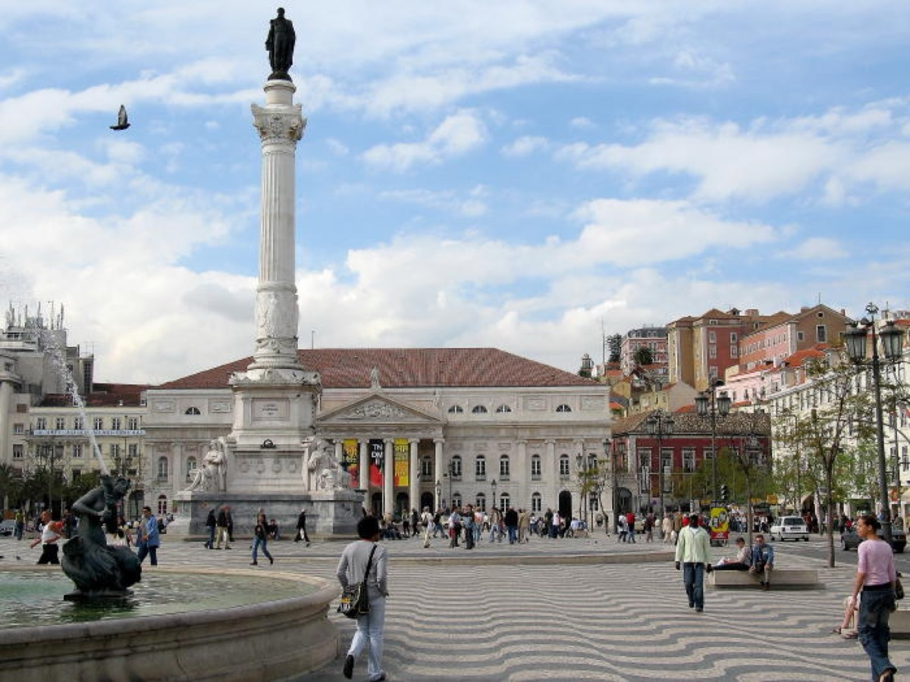
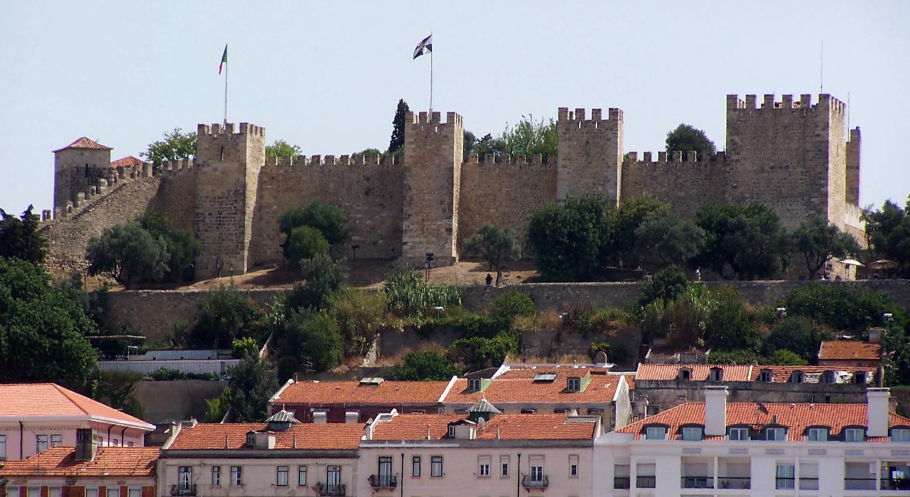
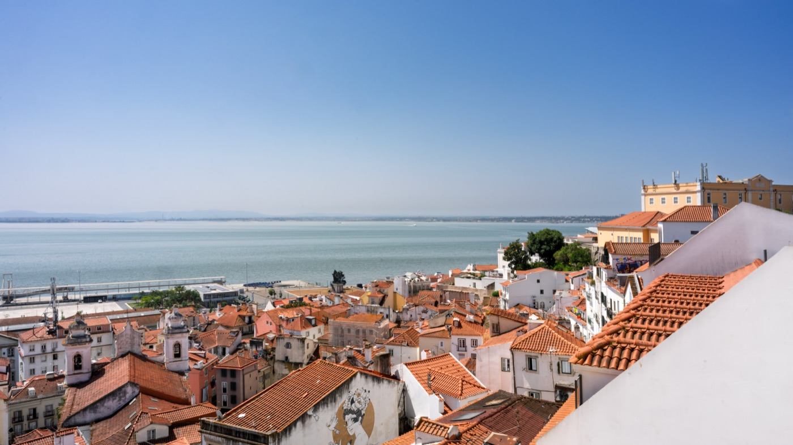
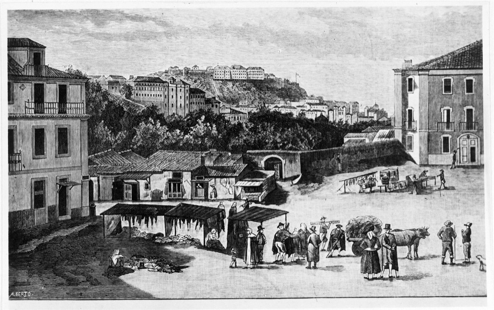
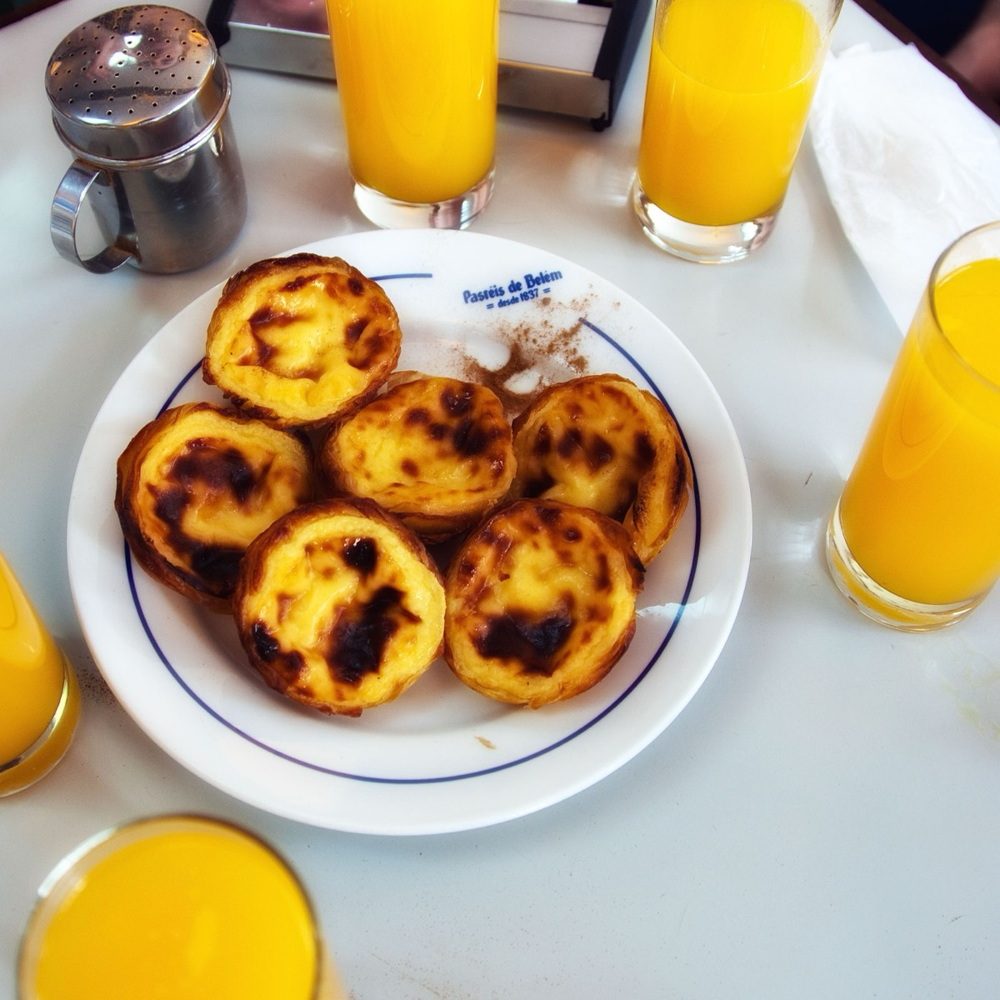
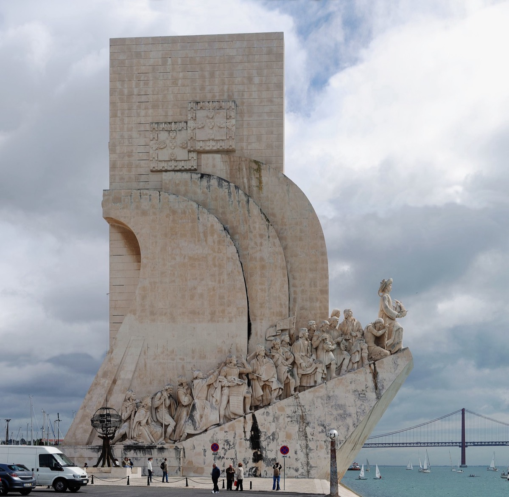
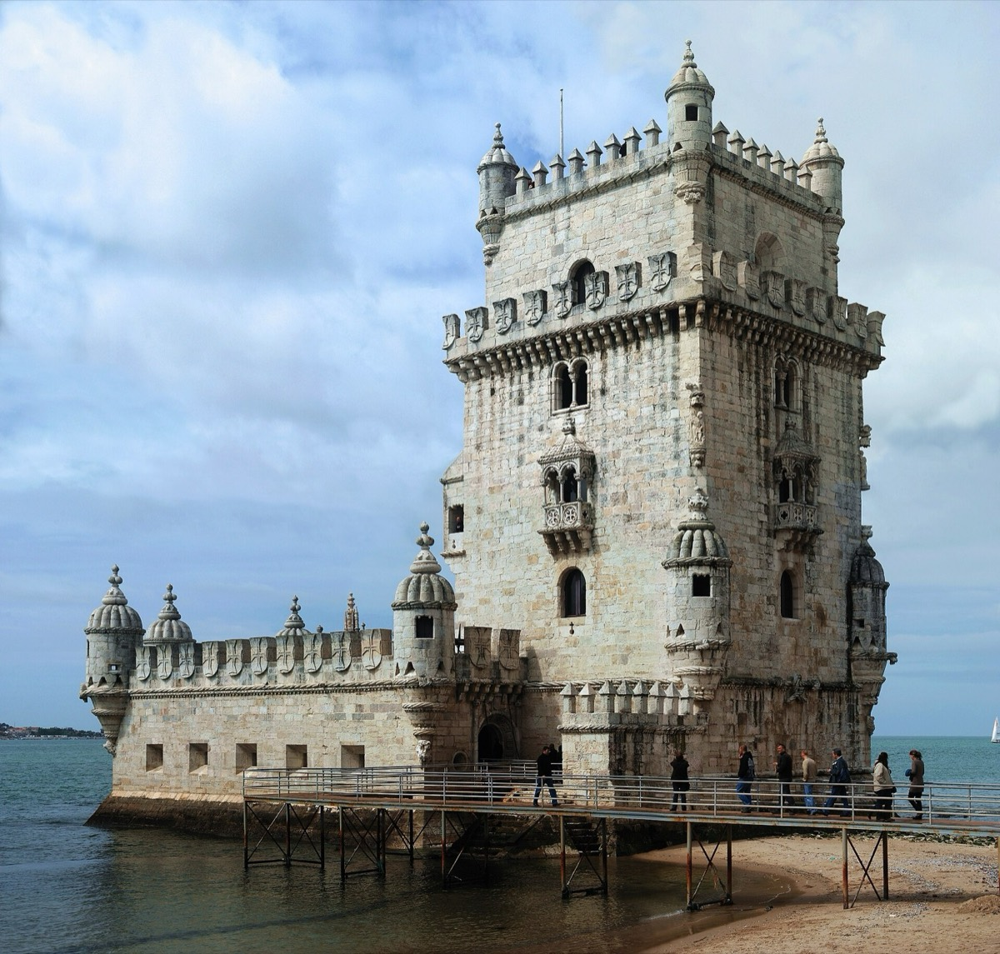
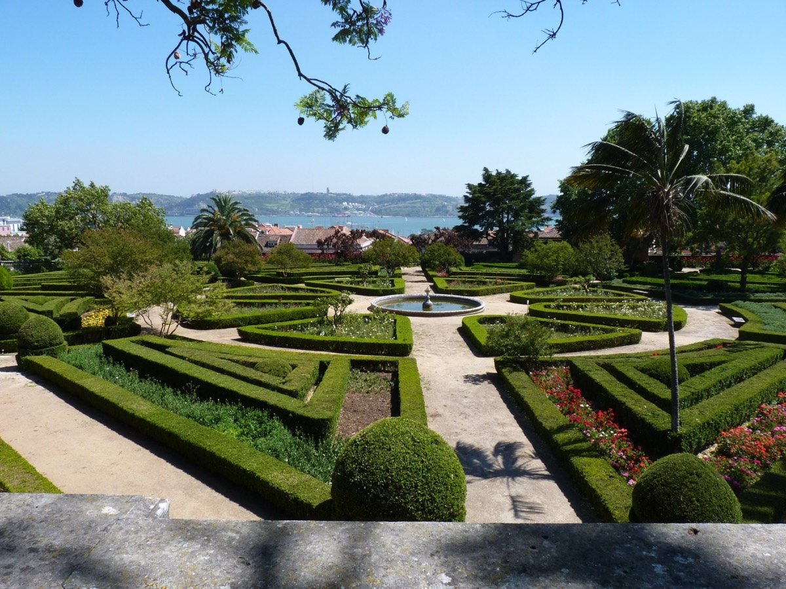
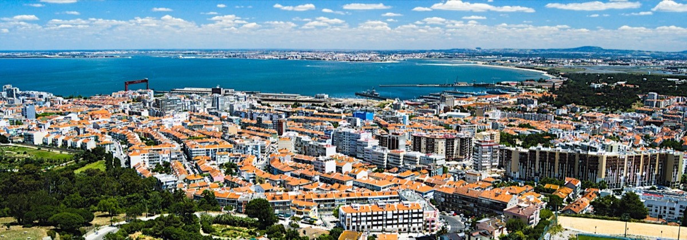
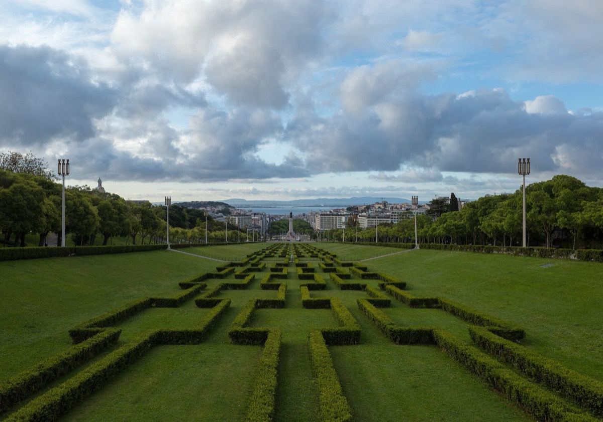

A friend's hand-picked map of the city — sunsets, secret bars, the OG pastel de nata. Mapped against your Chiado base.
new: aveiro half-day →Home base · 5 min walk to Cais do Sodré ferry
Start with a chill pit stop at Rossio Gardens, climb up to the castle for sunset, then drift back down for cocktails. Hits two of Andi's top 3 in one loop.

Pit StopLargo do Duque de Cadaval · Rossio
Super tucked away and hidden drink garden / snack place. It was packed with locals and a really fun chill vibe for a pit stop while exploring the city.
From base 5 min walk north through Chiado
Open Daily noon–midnight (Fri opens 10am)

★ Top 3R. de Santa Cruz do Castelo · Alfama
This castle is sickkkk! The views are nuts. Went during sunset and it was truly magical. The whole area by there also has a bunch of shops and restaurants — could be fun to explore during the day and pop into the actual castle after.
From base 15 min uphill walk (or Tram 28)
Open Daily 9am–9pm
Time it Get there ~1 hour before sunset

★ Top 3Av. da Liberdade 185 · Tivoli rooftop
Some of the best views of the city, good at any time of day.
From base 15 min walk north up Av. da Liberdade
Open 12:30pm–1am (Fri/Sat til 2am)
$$$ Cocktails-priced; book ahead for sunset

Or → SpeakeasyPraça da Alegria 66b · near Av. da Liberdade
Really cool underground bar with great cocktails. The speakeasy is Red Frog. They'll "invite" you to it after you have a drink or two at Monkey Mash. Honestly the main bar itself is a good vibe and filled with locals.
From base 12 min walk north
Open Tue–Sat 6pm–1am · Closed Sun + Mon
Heads up Reserve ahead — small + popular
Everything in Belém clusters within a 15-minute walking radius — knock out all four in one swing. Start with pastries, end in the gardens. Take Tram 15 or an Uber from Chiado (~15 min).

The OGR. de Belém 84–92
The OG pastry spot for Pastéis de Belém.
From base Tram 15 from Cais do Sodré (~25 min) or Uber (15 min)
Open Daily 8am–9pm
Pro tip Get takeaway if the seated line is brutal

MonumentAv. Brasília · Riverside
It is massive plus there's a bunch of other stuff within walking distance.
Open Daily 10am–7pm
Up top €10 for elevator to the viewing deck

IconicAv. Brasília · On the river
Belém Tower is also within walking distance.
Heads up Wrapped in renovation as of Feb 2026 — still photogenic from outside, but you may not be able to go in

UnderratedCalçada da Ajuda · Up the hill from Belém
Just down the street from the Monument. I loved it, thought it was super underrated.
Open Mon–Fri 10am–6pm · Weekends til 8pm
$ €2 entry · peacocks roam freely
Andi's favorite "surprise" of Lisbon. Ferry across the Tagus to Almada, bring snacks + wine, find a picnic spot in the park, watch the sun drop behind the 25 de Abril bridge. The elevator is icing.

★ Top 3Largo da Boca do Vento · Almada
Take the ferry over and go to the park next to it. It was one of my favorite things. Tons of people were picnic vibin waiting for sunset. Prob my favorite "surprise" of Lisbon. Great views of the bridge and the Jesus statue, plus you can take the elevator to the top for a better view.
From base 5 min walk to Cais do Sodré ferry terminal → ferry to Cacilhas (~10 min) → 10 min walk to the park
Open Daily 9:30am–11:30pm
$ Free elevator · ferry €1.45 each way
Bring Wine, bread, cheese — picnic vibes

North SideNorth of Av. da Liberdade
If you end up near the north side, stop by. Really nice view at the very top of the city and the park.
From base 25 min walk north (or 10 min on the Metro to Marquês de Pombal)
Pairs with Sky Bar — same direction